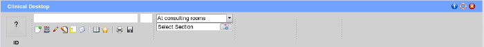
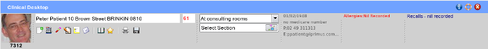

Finding a Patient.

You can search by typing in any one of the following formats into the patient searchbox located at the top left hand side of the
screen, and hitting the enter key to trigger the search. If multiple names are found a list will appear for you to choose the patient.
Types of search algorithm
A number of different search options can be used when typing into the search box:
- surname e.g smith gives a list of all patients with a surname smith.
- surname,firstname e.g smith,peter gives a list of all the peter smith's
- firstname, eg peter, (notice the order firstname, commma) will give a list of all patient's whose firstname starts with peter.
- sm,p sex=m gives a list of all patients with surname starting with sm, firstname starting with p and sex = male
- smith sex=m age >60 gives a list of all patients whose surname is smith and sex is male who are older than 60yrs of age.
When your patient is selected, EasyGP will add their demographic details, age, contact details, allergies
(section not implemented) and any outstanding recalls to the toolbar as shown below:
